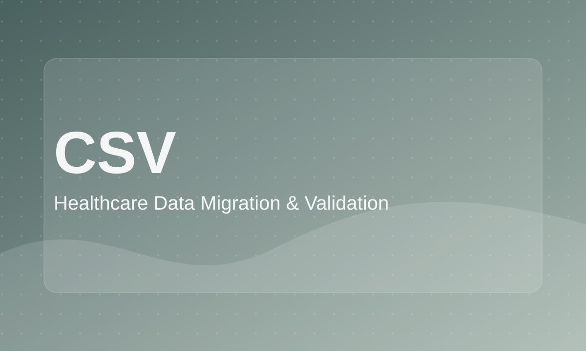

Healthcare Data Migration & Validation
Data operations case study focused on preparing healthcare-related records for accurate migration and import.

Role: Data Import / Data Operations Analyst
Tools: CSV, Excel, data validation, data cleaning
Project Type: Interview case study
Focus: Data quality, migration readiness, healthcare records
Business Problem
The business needed to migrate client and appointment data from one system into another while minimizing errors, downtime, and data gaps.
Goal
Prepare clean, import-ready data and define a reliable validation process before and after import.
What I Did
- Reviewed source data structure and expected target format.
- Checked client and appointment records for inconsistencies.
- Identified possible anomalies before import.
- Focused on accuracy, completeness, validation logic, and post-import checks.
Key Analysis / Visuals
- Source-to-target field mapping
- Data quality checklist
- Missing value / anomaly summary
- Import validation workflow
Outcome / Recommendations
Outlined a structured migration process: review source data, clean and transform records, import prepared CSV files, validate results, and troubleshoot post-import issues.